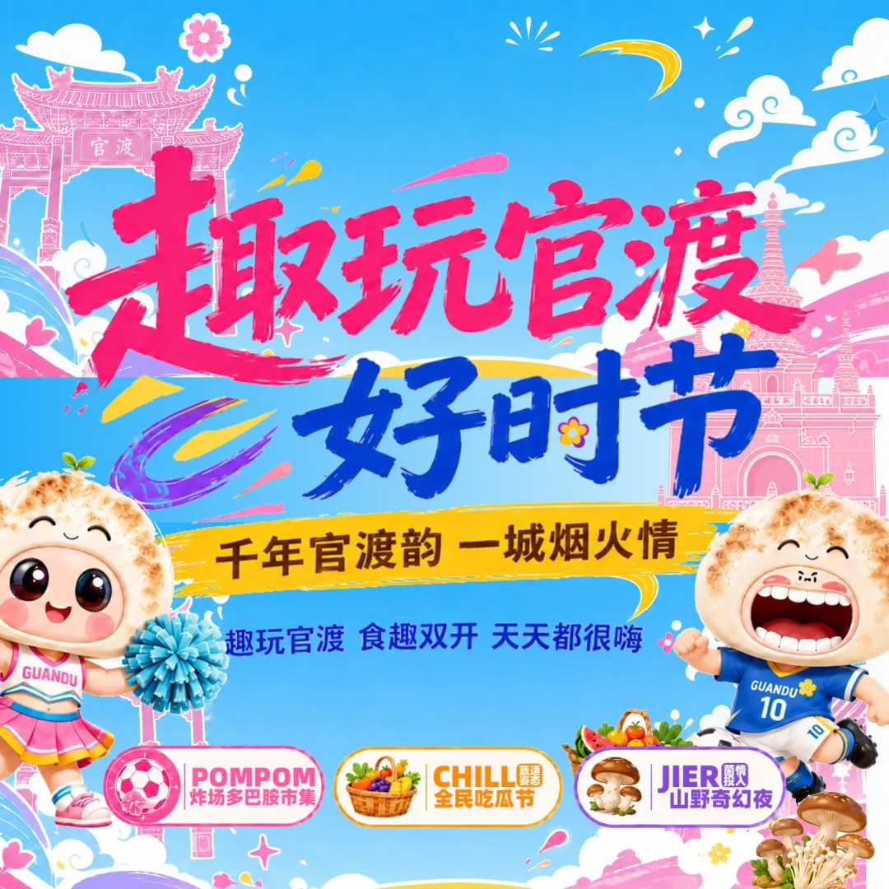
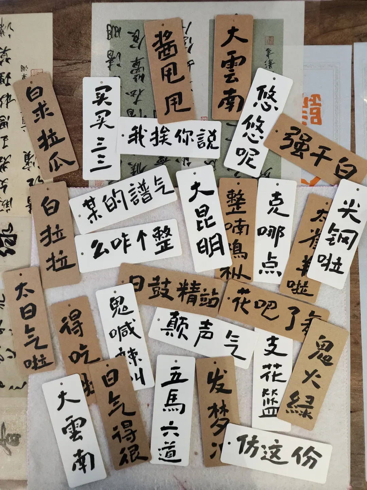
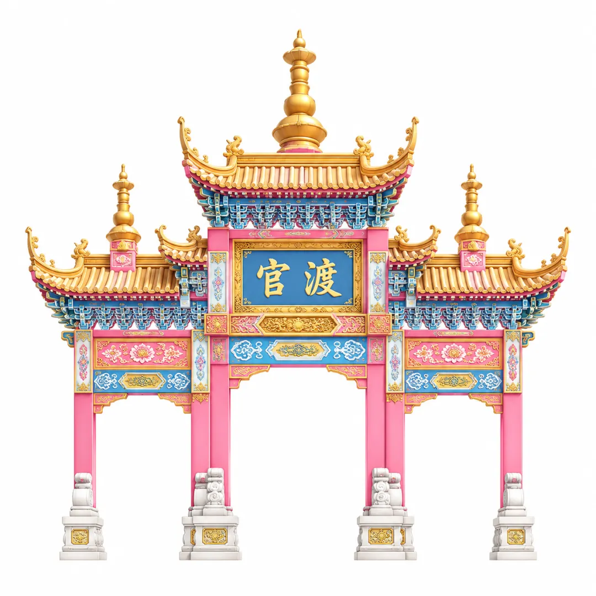
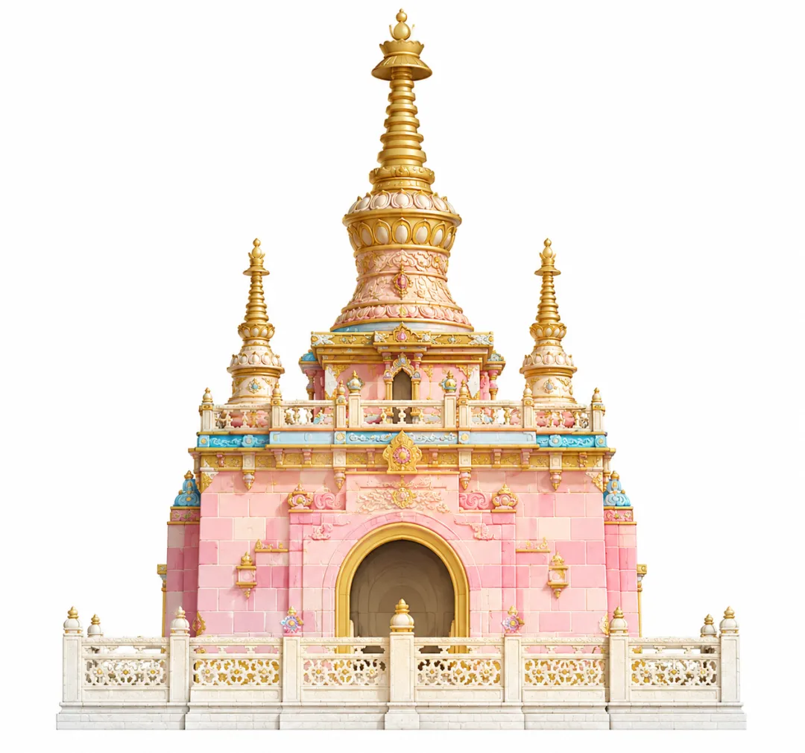

GUANDU CITY EVENT
全国赛事落地官渡
商旅联动点亮夏日烟火
2026 全国啦啦操联赛总决赛走进官渡。围绕赛事服务保障、城市消费承接、文旅体验延展和夜间经济培育，官渡同步推出“趣玩官渡好时节——千年官渡韵・一城烟火情”主题活动暨首届活力滇风全民艺术节，让一场体育赛事，成为市民游客共享的夏日城市嘉年华。

为什么办：以赛事带动城市综合服务
全国赛事来到官渡，带来的不只是赛场人气，更是展示城市形象、完善赛事服务、激活商旅消费的一次综合契机。来自各地的参赛队伍、家长观众与游客将在官渡相聚，城市服务要接住这份热度，也要让大家赛得安心、住得舒心、逛得开心。
因此，本次活动不是单一展销，也不是单一演出，而是围绕赛事人群的真实需求，组织商户、文旅资源、夜间消费和公共服务共同参与，把“看比赛”延展成“游官渡”。

赛事信息与活动主视觉共同构成面向公众的第一层告知。
赛事保障信息前置，让参赛家庭提前知道可选择的服务。

活动视觉统一使用官渡地标与吉祥物，强化城市识别。
怎么保障：商务部门联动辖区商家
围绕赛事期间参赛人员和市民游客的消费需求，官渡区商务和投资促进局联动辖区商家、市场主体和活动服务资源，推动餐饮、零售、文创、伴手礼、夜间消费等多元业态参与赛事服务。
从一份优惠券、一份伴手礼，到一条逛吃路线、一处夜游场景，再到赛事出行与旅游服务信息，官渡希望把赛事保障做得更细，也把城市服务做得更有温度。

围绕赛事出行与旅游需求，提供更清晰的服务选择。

商家联动，不只服务赛事，也承接城市消费。

商投大礼包把商户权益、伴手礼和消费场景串起来。
怎么玩：让赛事之外更有内容
活动期间，市民游客可以围绕“吃、住、行、游、购、娱”打开一条轻松的官渡夏日动线：到赛场感受青春活力，到市集挑选本地好物，到舞台看滇风演艺，到街区体验非遗文创和夜间消费。
从亲子家庭、年轻潮人、本地居民到外地游客，都可以在不同时间段找到自己的参与方式。这里既有面向大众的城市烟火，也有面向年轻人的潮流表达。
一句“烟火之约”，对应的是可逛、可吃、可看、可拍的城市现场。
亲子友好、轻松可爱，是这次活动希望传递的参与感。

把云南方言、在地表达和互动内容带进活动现场。
有什么：全民艺术节点亮夏日夜间场景
首届活力滇风全民艺术节同步启幕，让体育赛事之外，有更多可看、可玩、可参与的城市内容。白天有亲子游园、文旅互动、非遗体验；夜晚有滇风演艺、音乐舞台、随机舞蹈、夜间市集。
舞台承担“看”的内容，市集承担“逛”的内容，商户和文旅点位承担“留下来”的内容，赛事热度由此延展成面向大众开放的城市艺术现场。

滇风大舞台作为活动视觉中心，承接演艺、互动与城市记忆。

赛事热度之外，舞台让夜晚继续有看点。

夜间市集承接逛吃消费，也让活动更有烟火气。
三大主题周：把夏日玩法讲清楚
活动以三大主题周轮番上新，把“体育赛事、夏日消暑、云南山野风物”拆成三个可感知的玩法入口。不同时间来到官渡，都能遇见不一样的夏日体验。

围绕啦啦操赛事氛围，设置运动互动、潮流市集和拍照打卡内容，让赛场外也保持青春热度。

围绕夏日消暑、亲子互动与惠民市集，把水果、轻食、休闲和社交氛围做成轻松自在的城市烟火气。

把云南夏天最具辨识度的野生菌文化带入夜间场景，在美食、手作、灯光与演艺中打开山野奇幻感。
去哪逛：从赛事现场走进官渡街区
本次活动还将联动官渡古镇、云南省博物馆等周边文旅资源，引导参赛家庭和游客从赛事现场走向城市街区。对外地参赛家庭来说，官渡不只是比赛地点，也可以成为一段昆明城市体验。
看一场比赛，逛一座古镇，走进一座博物馆，品一份本地好物，带一份官渡记忆。这正是官渡希望通过赛事带动文旅消费、促进商圈活力的现实路径。

从赛场走向古镇，把赛事行程延展成城市漫游。

省博等文旅资源，让亲子家庭多一个停留理由。

官渡地标进入活动视觉，形成清晰的城市识别。

古镇文化与夏日活动并置，既年轻也有在地底色。
这个夏天，来官渡赴一场烟火之约
在全国赛事的青春活力里，在滇风艺术的开放舞台上，在商家共同参与的烟火市集中，一起感受“千年官渡韵・一城烟火情”。
7 月 11 日至 8 月 2 日，新亚洲体育城，欢迎市民游客走进官渡。


更多合作与参与方式，以现场发布信息为准。